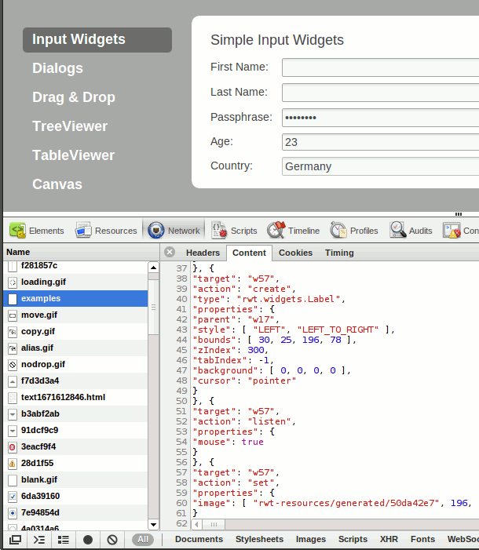

We planned this for a long time, and now it's becoming reality: the communication between server and client is being replaced with a new, JSON-based format (see bug 311355). This new protocol will enable alternative client implementations for RAP.
In this milestone, we focused our efforts on retrofitting LCAs to utilize this new protocol for communication with the client. The following widgets are already using the new protocol: Button, Combo, Composite, Group, Label, Link, ProgressBar, Sash, Scale, Shell, Slider, Spinner, Text, CCombo and CLabel. Changes are currently tracked in bug 351945. Also the text size determination has been switched to the protocol.

We're planning to complete this conversion before the end of this year. As the protocol stabilizes, we'll update the specification on the RAP Protocol wiki page.